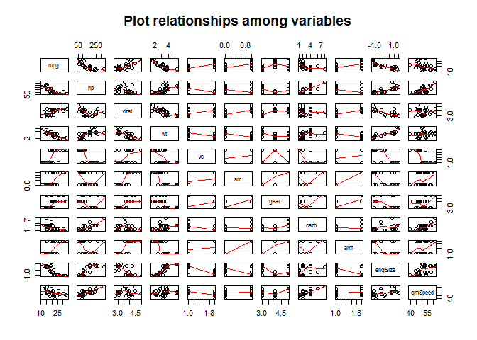
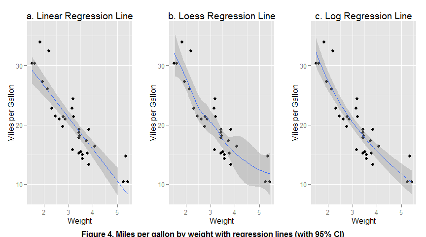
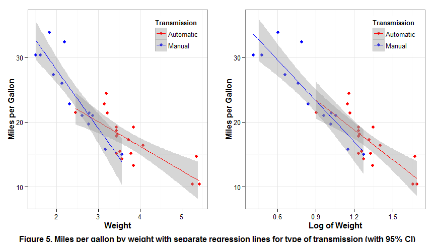
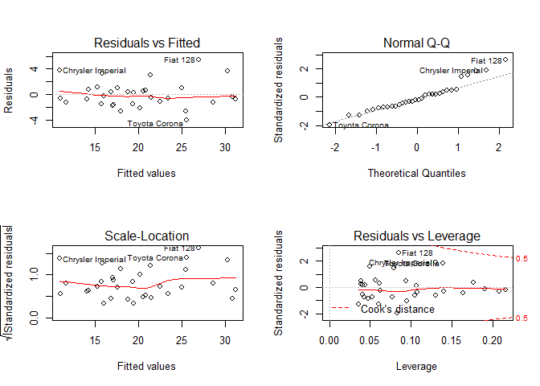

More detailed plus supplementary analyses with syntax
This supplement is intended to illustrate my thinking for the Regression Models project and fills in some of the details of the analyses and syntax that could not be fit into the report. It is not intended to be graded with the report.
data(mtcars)
attach(mtcars)
mtcars$vs <- as.factor(mtcars$vs)
mtcars$amf <- as.factor(mtcars$am)
## Initial t-test
t.test(mpg ~ amf, data = mtcars)##
## Welch Two Sample t-test
##
## data: mpg by amf
## t = -3.7671, df = 18.332, p-value = 0.001374
## alternative hypothesis: true difference in means is not equal to 0
## 95 percent confidence interval:
## -11.280194 -3.209684
## sample estimates:
## mean in group 0 mean in group 1
## 17.14737 24.39231## Standardize cyl and disp and create engSize
stdCyl <- (cyl - mean(cyl))/sd(cyl)
stdDisp <- (disp - mean(disp))/sd(disp)
mtcars$engSize <- (stdCyl + stdDisp)/2
## Remove cyl and disp from dataset
mtcars$cyl <- NULL
mtcars$disp <- NULL##Fit horsepowwer
hp.fit1 <- lm(hp ~ carb + engSize + vs, data = mtcars)
summary(hp.fit1)##
## Call:
## lm(formula = hp ~ carb + engSize + vs, data = mtcars)
##
## Residuals:
## Min 1Q Median 3Q Max
## -41.860 -16.844 1.023 14.869 51.261
##
## Coefficients:
## Estimate Std. Error t value Pr(>|t|)
## (Intercept) 87.032 15.471 5.625 5.04e-06 ***
## carb 20.071 3.692 5.436 8.44e-06 ***
## engSize 45.758 8.032 5.697 4.15e-06 ***
## vs1 7.326 16.662 0.440 0.664
## ---
## Signif. codes: 0 '***' 0.001 '**' 0.01 '*' 0.05 '.' 0.1 ' ' 1
##
## Residual standard error: 27.25 on 28 degrees of freedom
## Multiple R-squared: 0.8573, Adjusted R-squared: 0.842
## F-statistic: 56.08 on 3 and 28 DF, p-value: 5.853e-12## Final regression of hp on signifidcant variables
hp.fit2<- lm(hp ~ carb + engSize, data = mtcars)
summary(hp.fit2)##
## Call:
## lm(formula = hp ~ carb + engSize, data = mtcars)
##
## Residuals:
## Min 1Q Median 3Q Max
## -45.204 -17.110 -0.164 11.933 53.038
##
## Coefficients:
## Estimate Std. Error t value Pr(>|t|)
## (Intercept) 91.901 10.653 8.626 1.68e-09 ***
## carb 19.480 3.391 5.745 3.21e-06 ***
## engSize 43.268 5.616 7.705 1.70e-08 ***
## ---
## Signif. codes: 0 '***' 0.001 '**' 0.01 '*' 0.05 '.' 0.1 ' ' 1
##
## Residual standard error: 26.87 on 29 degrees of freedom
## Multiple R-squared: 0.8563, Adjusted R-squared: 0.8464
## F-statistic: 86.42 on 2 and 29 DF, p-value: 6.054e-13## loasd library(QuantPsyc) for standardized regression coefficients
library(QuantPsyc)## Warning: package 'QuantPsyc' was built under R version 3.2.2## Loading required package: boot
## Loading required package: MASS
##
## Attaching package: 'QuantPsyc'
##
## The following object is masked from 'package:base':
##
## normlm.beta(hp.fit2)## carb engSize
## 0.4589033 0.6154134## create qmSpeed
mtcars$qmSpeed <- (3600/mtcars$qsec * 0.25)
## Remove qsec
mtcars$qsec <- NULL
## Use final mtcars for pairs cor panel
pairs(x = mtcars, panel = panel.smooth, main = 'Plot relationships among variables')
## ok I double checked: amf1 = manual and vs1 = straight
mtcars2 <- mtcars
mtcars2$am <- NULL
str(mtcars2)## 'data.frame': 32 obs. of 10 variables:
## $ mpg : num 21 21 22.8 21.4 18.7 18.1 14.3 24.4 22.8 19.2 ...
## $ hp : num 110 110 93 110 175 105 245 62 95 123 ...
## $ drat : num 3.9 3.9 3.85 3.08 3.15 2.76 3.21 3.69 3.92 3.92 ...
## $ wt : num 2.62 2.88 2.32 3.21 3.44 ...
## $ vs : Factor w/ 2 levels "0","1": 1 1 2 2 1 2 1 2 2 2 ...
## $ gear : num 4 4 4 3 3 3 3 4 4 4 ...
## $ carb : num 4 4 1 1 2 1 4 2 2 4 ...
## $ amf : Factor w/ 2 levels "0","1": 2 2 2 1 1 1 1 1 1 1 ...
## $ engSize: num -0.3378 -0.3378 -1.1075 0.0576 1.029 ...
## $ qmSpeed: num 54.7 52.9 48.4 46.3 52.9 ...qmSpeed.fit <- lm(qmSpeed ~ ., data=mtcars2)
slm2 <- step(qmSpeed.fit)## Start: AIC=41.33
## qmSpeed ~ mpg + hp + drat + wt + vs + gear + carb + amf + engSize
##
## Df Sum of Sq RSS AIC
## - drat 1 1.233 63.559 39.959
## - carb 1 4.011 66.337 41.328
## <none> 62.326 41.332
## - gear 1 5.112 67.438 41.855
## - amf 1 5.185 67.511 41.890
## - hp 1 5.267 67.593 41.929
## - mpg 1 6.122 68.448 42.331
## - vs 1 13.239 75.564 45.496
## - engSize 1 20.734 83.059 48.522
## - wt 1 64.899 127.225 62.167
##
## Step: AIC=39.96
## qmSpeed ~ mpg + hp + wt + vs + gear + carb + amf + engSize
##
## Df Sum of Sq RSS AIC
## <none> 63.559 39.959
## - carb 1 4.679 68.238 40.233
## - hp 1 5.280 68.839 40.513
## - mpg 1 5.553 69.112 40.640
## - gear 1 5.918 69.477 40.808
## - amf 1 6.373 69.932 41.017
## - vs 1 13.024 76.583 43.925
## - engSize 1 19.705 83.264 46.601
## - wt 1 65.607 129.166 60.652summary(slm2)##
## Call:
## lm(formula = qmSpeed ~ mpg + hp + wt + vs + gear + carb + amf +
## engSize, data = mtcars2)
##
## Residuals:
## Min 1Q Median 3Q Max
## -4.6167 -0.6640 0.1719 0.6311 3.1881
##
## Coefficients:
## Estimate Std. Error t value Pr(>|t|)
## (Intercept) 58.76989 5.25799 11.177 9.0e-11 ***
## mpg -0.18588 0.13113 -1.418 0.1697
## hp 0.01854 0.01341 1.382 0.1802
## wt -3.97011 0.81480 -4.872 6.4e-05 ***
## vs1 -2.67652 1.23286 -2.171 0.0405 *
## gear 1.31464 0.89835 1.463 0.1569
## carb 0.52949 0.40691 1.301 0.2061
## amf1 1.87550 1.23505 1.519 0.1425
## engSize 3.59965 1.34803 2.670 0.0137 *
## ---
## Signif. codes: 0 '***' 0.001 '**' 0.01 '*' 0.05 '.' 0.1 ' ' 1
##
## Residual standard error: 1.662 on 23 degrees of freedom
## Multiple R-squared: 0.9202, Adjusted R-squared: 0.8924
## F-statistic: 33.14 on 8 and 23 DF, p-value: 7.68e-11qmSpeed.fit2 <- lm(qmSpeed ~ hp + wt + vs + gear + engSize , data=mtcars2)
summary(qmSpeed.fit2)##
## Call:
## lm(formula = qmSpeed ~ hp + wt + vs + gear + engSize, data = mtcars2)
##
## Residuals:
## Min 1Q Median 3Q Max
## -5.8009 -0.5151 0.2911 0.7801 3.1272
##
## Coefficients:
## Estimate Std. Error t value Pr(>|t|)
## (Intercept) 49.88442 3.30906 15.075 2.29e-14 ***
## hp 0.03557 0.01147 3.101 0.00460 **
## wt -3.26095 0.67462 -4.834 5.21e-05 ***
## vs1 -4.03677 1.13813 -3.547 0.00151 **
## gear 2.18709 0.75275 2.905 0.00739 **
## engSize 2.66751 1.31896 2.022 0.05353 .
## ---
## Signif. codes: 0 '***' 0.001 '**' 0.01 '*' 0.05 '.' 0.1 ' ' 1
##
## Residual standard error: 1.752 on 26 degrees of freedom
## Multiple R-squared: 0.8997, Adjusted R-squared: 0.8804
## F-statistic: 46.66 on 5 and 26 DF, p-value: 3.62e-12lm.beta(qmSpeed.fit2)## hp wt vs1 gear engSize
## 0.4812403 -0.6295504 -0.4014429 0.3183852 0.5132693qmSpeed.fit3 <- lm(qmSpeed ~ hp + log(wt) + vs + gear + engSize , data=mtcars2)
summary(qmSpeed.fit3)##
## Call:
## lm(formula = qmSpeed ~ hp + log(wt) + vs + gear + engSize, data = mtcars2)
##
## Residuals:
## Min 1Q Median 3Q Max
## -5.5554 -0.6911 -0.0277 1.0693 3.2472
##
## Coefficients:
## Estimate Std. Error t value Pr(>|t|)
## (Intercept) 49.94285 3.65333 13.671 2.21e-13 ***
## hp 0.03806 0.01215 3.132 0.004265 **
## log(wt) -9.16437 2.15954 -4.244 0.000247 ***
## vs1 -4.41103 1.18982 -3.707 0.000998 ***
## gear 2.05960 0.80208 2.568 0.016331 *
## engSize 2.06484 1.35372 1.525 0.139255
## ---
## Signif. codes: 0 '***' 0.001 '**' 0.01 '*' 0.05 '.' 0.1 ' ' 1
##
## Residual standard error: 1.856 on 26 degrees of freedom
## Multiple R-squared: 0.8875, Adjusted R-squared: 0.8659
## F-statistic: 41.03 on 5 and 26 DF, p-value: 1.581e-11lm.beta(qmSpeed.fit3)## hp log(wt) vs1 gear engSize
## 0.5148265 -0.5741023 -0.4386616 0.2998259 0.3973066## Final regression of qmSpeed on vars using log(wt) for Figure 2
qmSpeed.fit4 <- lm(qmSpeed ~ hp + log(wt) + vs + gear , data=mtcars2)
summary(qmSpeed.fit4)##
## Call:
## lm(formula = qmSpeed ~ hp + log(wt) + vs + gear, data = mtcars2)
##
## Residuals:
## Min 1Q Median 3Q Max
## -6.1022 -1.0076 0.2985 1.3203 3.0155
##
## Coefficients:
## Estimate Std. Error t value Pr(>|t|)
## (Intercept) 49.612092 3.735400 13.282 2.35e-13 ***
## hp 0.051148 0.008811 5.805 3.54e-06 ***
## log(wt) -7.616785 1.952624 -3.901 0.000575 ***
## vs1 -5.454073 0.997320 -5.469 8.67e-06 ***
## gear 1.281485 0.633964 2.021 0.053255 .
## ---
## Signif. codes: 0 '***' 0.001 '**' 0.01 '*' 0.05 '.' 0.1 ' ' 1
##
## Residual standard error: 1.901 on 27 degrees of freedom
## Multiple R-squared: 0.8775, Adjusted R-squared: 0.8593
## F-statistic: 48.33 on 4 and 27 DF, p-value: 6.319e-12lm.beta(qmSpeed.fit4)## hp log(wt) vs1 gear
## 0.6919329 -0.4771536 -0.5423884 0.1865518## first regress mpg on vars using wt for Figure 1
mpg.fit1 <- lm(mpg ~ . , data=mtcars2)
slm3 <- step(mpg.fit1)## Start: AIC=68.17
## mpg ~ hp + drat + wt + vs + gear + carb + amf + engSize + qmSpeed
##
## Df Sum of Sq RSS AIC
## - vs 1 0.004 144.16 66.167
## - hp 1 1.694 145.85 66.540
## - carb 1 2.718 146.88 66.764
## - engSize 1 3.151 147.31 66.858
## - drat 1 3.642 147.80 66.964
## - gear 1 4.778 148.94 67.209
## <none> 144.16 68.166
## - amf 1 12.230 156.39 68.772
## - qmSpeed 1 14.161 158.32 69.164
## - wt 1 34.059 178.22 72.953
##
## Step: AIC=66.17
## mpg ~ hp + drat + wt + gear + carb + amf + engSize + qmSpeed
##
## Df Sum of Sq RSS AIC
## - hp 1 2.072 146.23 64.623
## - carb 1 2.764 146.93 64.774
## - engSize 1 3.507 147.67 64.936
## - drat 1 3.649 147.81 64.966
## - gear 1 4.840 149.00 65.223
## <none> 144.16 66.167
## - amf 1 12.841 157.00 66.897
## - qmSpeed 1 17.265 161.43 67.786
## - wt 1 34.488 178.65 71.030
##
## Step: AIC=64.62
## mpg ~ drat + wt + gear + carb + amf + engSize + qmSpeed
##
## Df Sum of Sq RSS AIC
## - engSize 1 2.056 148.29 63.070
## - drat 1 3.782 150.02 63.440
## - gear 1 4.002 150.24 63.487
## - carb 1 5.519 151.75 63.809
## <none> 146.23 64.623
## - amf 1 13.252 159.49 65.399
## - qmSpeed 1 20.348 166.58 66.792
## - wt 1 34.651 180.88 69.428
##
## Step: AIC=63.07
## mpg ~ drat + wt + gear + carb + amf + qmSpeed
##
## Df Sum of Sq RSS AIC
## - gear 1 2.568 150.86 61.619
## - drat 1 2.731 151.02 61.654
## - carb 1 8.293 156.58 62.811
## <none> 148.29 63.070
## - amf 1 11.698 159.99 63.500
## - qmSpeed 1 40.992 189.28 68.880
## - wt 1 57.167 205.46 71.504
##
## Step: AIC=61.62
## mpg ~ drat + wt + carb + amf + qmSpeed
##
## Df Sum of Sq RSS AIC
## - drat 1 4.369 155.23 60.533
## - carb 1 5.741 156.60 60.815
## <none> 150.86 61.619
## - amf 1 20.361 171.22 63.671
## - qmSpeed 1 44.732 195.59 67.929
## - wt 1 75.342 226.20 72.582
##
## Step: AIC=60.53
## mpg ~ wt + carb + amf + qmSpeed
##
## Df Sum of Sq RSS AIC
## - carb 1 3.434 158.66 59.233
## <none> 155.23 60.533
## - amf 1 33.063 188.29 64.712
## - qmSpeed 1 60.394 215.62 69.049
## - wt 1 111.715 266.94 75.882
##
## Step: AIC=59.23
## mpg ~ wt + amf + qmSpeed
##
## Df Sum of Sq RSS AIC
## <none> 158.66 59.233
## - amf 1 29.635 188.30 62.713
## - qmSpeed 1 119.658 278.32 75.217
## - wt 1 177.233 335.89 81.234summary(slm3)##
## Call:
## lm(formula = mpg ~ wt + amf + qmSpeed, data = mtcars2)
##
## Residuals:
## Min 1Q Median 3Q Max
## -3.7664 -1.5435 -0.5977 1.2411 4.4187
##
## Coefficients:
## Estimate Std. Error t value Pr(>|t|)
## (Intercept) 54.32392 4.38164 12.398 6.87e-13 ***
## wt -3.84973 0.68836 -5.593 5.51e-06 ***
## amf1 3.13914 1.37268 2.287 0.03 *
## qmSpeed -0.45419 0.09884 -4.595 8.38e-05 ***
## ---
## Signif. codes: 0 '***' 0.001 '**' 0.01 '*' 0.05 '.' 0.1 ' ' 1
##
## Residual standard error: 2.38 on 28 degrees of freedom
## Multiple R-squared: 0.8591, Adjusted R-squared: 0.844
## F-statistic: 56.91 on 3 and 28 DF, p-value: 4.91e-12## Add interaction term for better fit
mpg.fit2 <- lm(mpg ~ qmSpeed + amf + wt + amf:wt, data = mtcars2)
summary(mpg.fit2)##
## Call:
## lm(formula = mpg ~ qmSpeed + amf + wt + amf:wt, data = mtcars2)
##
## Residuals:
## Min 1Q Median 3Q Max
## -3.6690 -1.4367 -0.1477 0.9370 4.3428
##
## Coefficients:
## Estimate Std. Error t value Pr(>|t|)
## (Intercept) 46.82779 4.61370 10.150 1.03e-10 ***
## qmSpeed -0.36411 0.09236 -3.942 0.000515 ***
## amf1 12.91876 3.49487 3.696 0.000982 ***
## wt -3.05358 0.66390 -4.599 8.94e-05 ***
## amf1:wt -3.70012 1.24019 -2.984 0.005983 **
## ---
## Signif. codes: 0 '***' 0.001 '**' 0.01 '*' 0.05 '.' 0.1 ' ' 1
##
## Residual standard error: 2.102 on 27 degrees of freedom
## Multiple R-squared: 0.894, Adjusted R-squared: 0.8783
## F-statistic: 56.95 on 4 and 27 DF, p-value: 9.037e-13#however, the betas seem to be erroneou
lm.beta(mpg.fit2)## Warning in b * sx: longer object length is not a multiple of shorter
## object length## qmSpeed amf1 wt amf1:wt
## -0.3061930 1.0695869 -0.4957402 -3.1115289## Running the analysis with am as an interger gives the same b weights but much
## more plausible beta weights
mtcars$amxwt <- mtcars$am*mtcars$wt
mpg.fit3 <- lm(mpg ~ qmSpeed + am + wt + amxwt, data = mtcars)
summary(mpg.fit3)##
## Call:
## lm(formula = mpg ~ qmSpeed + am + wt + amxwt, data = mtcars)
##
## Residuals:
## Min 1Q Median 3Q Max
## -3.6690 -1.4367 -0.1477 0.9370 4.3428
##
## Coefficients:
## Estimate Std. Error t value Pr(>|t|)
## (Intercept) 46.82779 4.61370 10.150 1.03e-10 ***
## qmSpeed -0.36411 0.09236 -3.942 0.000515 ***
## am 12.91876 3.49487 3.696 0.000982 ***
## wt -3.05358 0.66390 -4.599 8.94e-05 ***
## amxwt -3.70012 1.24019 -2.984 0.005983 **
## ---
## Signif. codes: 0 '***' 0.001 '**' 0.01 '*' 0.05 '.' 0.1 ' ' 1
##
## Residual standard error: 2.102 on 27 degrees of freedom
## Multiple R-squared: 0.894, Adjusted R-squared: 0.8783
## F-statistic: 56.95 on 4 and 27 DF, p-value: 9.037e-13lm.beta(mpg.fit3)## qmSpeed am wt amxwt
## -0.3061930 1.0695869 -0.4957402 -0.7752857## Now do it with log(wt)
mtcars3 <- mtcars2
mtcars3$logWt<- log(mtcars3$wt)
mtcars3$wt <- NULL
# doing it this way with logWt instead of wt gives us insig coeff for am
# from the start
mpg.fit4<- lm(mpg ~ . , data=mtcars3)
slm4 <- step(mpg.fit4)## Start: AIC=61.37
## mpg ~ hp + drat + vs + gear + carb + amf + engSize + qmSpeed +
## logWt
##
## Df Sum of Sq RSS AIC
## - vs 1 0.544 117.11 59.516
## - carb 1 0.608 117.17 59.534
## - hp 1 1.058 117.62 59.656
## - drat 1 1.424 117.99 59.756
## - amf 1 2.412 118.98 60.022
## - engSize 1 3.541 120.11 60.325
## - gear 1 5.733 122.30 60.904
## <none> 116.57 61.367
## - qmSpeed 1 19.461 136.03 64.308
## - logWt 1 61.652 178.22 72.953
##
## Step: AIC=59.52
## mpg ~ hp + drat + gear + carb + amf + engSize + qmSpeed + logWt
##
## Df Sum of Sq RSS AIC
## - carb 1 0.463 117.57 57.642
## - drat 1 1.315 118.42 57.873
## - hp 1 2.060 119.17 58.074
## - amf 1 3.157 120.27 58.367
## - engSize 1 4.965 122.07 58.845
## - gear 1 5.341 122.45 58.943
## <none> 117.11 59.516
## - qmSpeed 1 21.599 138.71 62.932
## - logWt 1 61.541 178.65 71.030
##
## Step: AIC=57.64
## mpg ~ hp + drat + gear + amf + engSize + qmSpeed + logWt
##
## Df Sum of Sq RSS AIC
## - drat 1 1.165 118.74 55.958
## - amf 1 3.165 120.74 56.492
## - hp 1 3.290 120.86 56.526
## - gear 1 4.879 122.45 56.943
## - engSize 1 6.681 124.25 57.411
## <none> 117.57 57.642
## - qmSpeed 1 27.504 145.08 62.369
## - logWt 1 96.727 214.30 74.852
##
## Step: AIC=55.96
## mpg ~ hp + gear + amf + engSize + qmSpeed + logWt
##
## Df Sum of Sq RSS AIC
## - hp 1 3.219 121.96 54.814
## - amf 1 3.856 122.59 54.981
## - engSize 1 5.779 124.52 55.478
## - gear 1 5.964 124.70 55.526
## <none> 118.74 55.958
## - qmSpeed 1 26.880 145.62 60.488
## - logWt 1 97.929 216.67 73.204
##
## Step: AIC=54.81
## mpg ~ gear + amf + engSize + qmSpeed + logWt
##
## Df Sum of Sq RSS AIC
## - engSize 1 3.561 125.52 53.735
## - gear 1 3.979 125.94 53.841
## - amf 1 4.125 126.08 53.878
## <none> 121.96 54.814
## - qmSpeed 1 41.525 163.48 62.191
## - logWt 1 116.231 238.19 74.234
##
## Step: AIC=53.73
## mpg ~ gear + amf + qmSpeed + logWt
##
## Df Sum of Sq RSS AIC
## - gear 1 1.233 126.75 52.048
## - amf 1 3.307 128.82 52.567
## <none> 125.52 53.735
## - qmSpeed 1 82.314 207.83 67.872
## - logWt 1 203.167 328.68 82.540
##
## Step: AIC=52.05
## mpg ~ amf + qmSpeed + logWt
##
## Df Sum of Sq RSS AIC
## <none> 126.75 52.048
## - amf 1 8.489 135.24 52.122
## - qmSpeed 1 81.221 207.97 65.893
## - logWt 1 209.144 335.89 81.234summary(slm4)##
## Call:
## lm(formula = mpg ~ amf + qmSpeed + logWt, data = mtcars3)
##
## Residuals:
## Min 1Q Median 3Q Max
## -3.2546 -1.3285 -0.4540 0.9142 4.7775
##
## Coefficients:
## Estimate Std. Error t value Pr(>|t|)
## (Intercept) 54.71848 3.91881 13.963 3.86e-14 ***
## amf1 1.81004 1.32175 1.369 0.181753
## qmSpeed -0.38787 0.09157 -4.236 0.000223 ***
## logWt -13.92198 2.04821 -6.797 2.21e-07 ***
## ---
## Signif. codes: 0 '***' 0.001 '**' 0.01 '*' 0.05 '.' 0.1 ' ' 1
##
## Residual standard error: 2.128 on 28 degrees of freedom
## Multiple R-squared: 0.8874, Adjusted R-squared: 0.8754
## F-statistic: 73.58 on 3 and 28 DF, p-value: 2.149e-13# Here I test the valid model above using log(wt) instead of wt
mpg.fit5 <- lm(mpg ~ qmSpeed + amf + log(wt) + amf:log(wt), data = mtcars2)
summary(mpg.fit5)##
## Call:
## lm(formula = mpg ~ qmSpeed + amf + log(wt) + amf:log(wt), data = mtcars2)
##
## Residuals:
## Min 1Q Median 3Q Max
## -3.2170 -1.6762 -0.2272 0.9532 4.7380
##
## Coefficients:
## Estimate Std. Error t value Pr(>|t|)
## (Intercept) 51.39309 4.85423 10.587 4.12e-11 ***
## qmSpeed -0.37480 0.09176 -4.085 0.000354 ***
## amf1 6.12990 3.98354 1.539 0.135490
## log(wt) -11.87846 2.70413 -4.393 0.000156 ***
## amf1:log(wt) -4.02047 3.49987 -1.149 0.260735
## ---
## Signif. codes: 0 '***' 0.001 '**' 0.01 '*' 0.05 '.' 0.1 ' ' 1
##
## Residual standard error: 2.116 on 27 degrees of freedom
## Multiple R-squared: 0.8927, Adjusted R-squared: 0.8768
## F-statistic: 56.15 on 4 and 27 DF, p-value: 1.071e-12# Remove interaction since it has least significance
mpg.fit6 <- lm(mpg ~ qmSpeed + amf + log(wt), data = mtcars2)
summary(mpg.fit6)##
## Call:
## lm(formula = mpg ~ qmSpeed + amf + log(wt), data = mtcars2)
##
## Residuals:
## Min 1Q Median 3Q Max
## -3.2546 -1.3285 -0.4540 0.9142 4.7775
##
## Coefficients:
## Estimate Std. Error t value Pr(>|t|)
## (Intercept) 54.71848 3.91881 13.963 3.86e-14 ***
## qmSpeed -0.38787 0.09157 -4.236 0.000223 ***
## amf1 1.81004 1.32175 1.369 0.181753
## log(wt) -13.92198 2.04821 -6.797 2.21e-07 ***
## ---
## Signif. codes: 0 '***' 0.001 '**' 0.01 '*' 0.05 '.' 0.1 ' ' 1
##
## Residual standard error: 2.128 on 28 degrees of freedom
## Multiple R-squared: 0.8874, Adjusted R-squared: 0.8754
## F-statistic: 73.58 on 3 and 28 DF, p-value: 2.149e-13# Finally remove amf since it is not sig
mpg.fit7 <- lm(mpg ~ qmSpeed + log(wt), data = mtcars2)
summary(mpg.fit7)##
## Call:
## lm(formula = mpg ~ qmSpeed + log(wt), data = mtcars2)
##
## Residuals:
## Min 1Q Median 3Q Max
## -4.0350 -1.3463 -0.4189 0.8375 5.4240
##
## Coefficients:
## Estimate Std. Error t value Pr(>|t|)
## (Intercept) 54.48381 3.97370 13.711 3.33e-14 ***
## qmSpeed -0.31925 0.07779 -4.104 0.000301 ***
## log(wt) -16.17148 1.24176 -13.023 1.21e-13 ***
## ---
## Signif. codes: 0 '***' 0.001 '**' 0.01 '*' 0.05 '.' 0.1 ' ' 1
##
## Residual standard error: 2.159 on 29 degrees of freedom
## Multiple R-squared: 0.8799, Adjusted R-squared: 0.8716
## F-statistic: 106.2 on 2 and 29 DF, p-value: 4.502e-14lm.beta(mpg.fit7)## qmSpeed log(wt)
## -0.2684645 -0.8519104Syntax for creating figures (figures 2 and 3 were created with PowerPoint)


library(ggplot2)
plot1 <- ggplot(mtcars, aes(x=wt, y=mpg)) + geom_point() + geom_smooth(method=lm) +
ylim(8,36) + labs(x="Weight", y = "Miles per Gallon", title= "a. Linear Regression Line")
plot2 <- ggplot(mtcars, aes(x=wt, y=mpg)) + geom_point() + geom_smooth(method=loess) +
ylim(8,36) + labs(x="Weight", y = "Miles per Gallon", title= "b. Loess Regression Line")
plot3 <- ggplot(mtcars, aes(x=wt, y=mpg)) + geom_point() + stat_smooth(method="lm",
formula=y~log(x)) + ylim(8,36) + labs(x="Weight", y = "Miles per Gallon", title= "c. Log Regression Line")
library(gridExtra)
grid.arrange(plot1, plot2, plot3, nrow=1, sub=textGrob("Figure 4. Miles per gallon by weight with regression lines (with 95% CI)", gp=gpar(font=2)))
Some suggestions for the graph syntax came from here: http://rforpublichealth.blogspot.com/2013/11/ggplot2-cheatsheet-for-scatterplots.html
plot4 <- ggplot(data=mtcars, aes(x=wt, y=mpg)) +
geom_point(size=2, aes(color=factor(am))) +
geom_smooth(aes(color=factor(am)), method="lm", se=T) +
scale_color_manual(name ="Transmission", labels=c("Automatic", "Manual"),
values=c("red","blue")) + theme_bw() +
theme(axis.title.x = element_text(face="bold", color="black", size=12),
axis.title.y = element_text(face="bold", color="black", size=12),
plot.title = element_text(face="bold", color = "black", size=12),
legend.position=c(1,1),
legend.justification=c(1,1)) + ylim(8,36) +
labs(x="Weight", y = "Miles per Gallon")
mtcars$lmWt <- log(mtcars$wt)
plot5 <- ggplot(data=mtcars, aes(x=lmWt, y=mpg, color=am)) + geom_point(size=2, aes(color=factor(am,))) +
geom_smooth(aes(color=factor(am)), method="lm", se=T) +
scale_color_manual(name ="Transmission",
labels=c("Automatic", "Manual"), values=c("red","blue")) +
theme_bw() + theme(axis.title.x = element_text(face="bold", color="black", size=12),
axis.title.y = element_text(face="bold", color="black", size=12),
plot.title = element_text(face="bold", color = "black", size=12),
legend.position=c(1,1),
legend.justification=c(1,1)) + ylim(8,36) +
labs(x="Log of Weight", y = "Miles per Gallon")
library(gridExtra)
grid.arrange(plot4, plot5, nrow=1, sub=textGrob("Figure 5. Miles per gallon by weight with separate regression lines for type of transmission (with 95% CI)", gp=gpar(font=2)))
par(mfrow=c(2,2))
plot(mpg.fit7)
## Figure 6. Diagnostics of final model lm(mpg ~ qmSpeed + log(Wt) + am)## Finally, we can use ANOVA to test if the fit is better with or
## without the interaction term.
mod1 <- aov(mpg ~ amf*wt + qmSpeed, data=mtcars)
summary(mod1)## Df Sum Sq Mean Sq F value Pr(>F)
## amf 1 405.2 405.2 91.676 3.58e-10 ***
## wt 1 442.6 442.6 100.145 1.40e-10 ***
## qmSpeed 1 119.7 119.7 27.076 1.76e-05 ***
## amf:wt 1 39.3 39.3 8.901 0.00598 **
## Residuals 27 119.3 4.4
## ---
## Signif. codes: 0 '***' 0.001 '**' 0.01 '*' 0.05 '.' 0.1 ' ' 1## Now check the model without the interaction term
mod2 <- aov(mpg ~ amf + wt + qmSpeed, data=mtcars)
summary(mod2)## Df Sum Sq Mean Sq F value Pr(>F)
## amf 1 405.2 405.2 71.50 3.40e-09 ***
## wt 1 442.6 442.6 78.10 1.37e-09 ***
## qmSpeed 1 119.7 119.7 21.12 8.38e-05 ***
## Residuals 28 158.7 5.7
## ---
## Signif. codes: 0 '***' 0.001 '**' 0.01 '*' 0.05 '.' 0.1 ' ' 1## Finally, we test the difference between the two models
anova(mod1,mod2)## Analysis of Variance Table
##
## Model 1: mpg ~ amf * wt + qmSpeed
## Model 2: mpg ~ amf + wt + qmSpeed
## Res.Df RSS Df Sum of Sq F Pr(>F)
## 1 27 119.32
## 2 28 158.66 -1 -39.338 8.9013 0.005983 **
## ---
## Signif. codes: 0 '***' 0.001 '**' 0.01 '*' 0.05 '.' 0.1 ' ' 1# This last analysis shows that removing the interaction term
# signficantly degrades the fit of the model, i.e, we should
# retain the interaction term
##
## Now we do the same but using log(wt) instead of wt
mod3 <- aov(mpg ~ amf*log(wt) + qmSpeed, data=mtcars)
summary(mod3)## Df Sum Sq Mean Sq F value Pr(>F)
## amf 1 405.2 405.2 90.52 4.09e-10 ***
## log(wt) 1 512.9 512.9 114.60 3.23e-11 ***
## qmSpeed 1 81.2 81.2 18.15 0.000222 ***
## amf:log(wt) 1 5.9 5.9 1.32 0.260735
## Residuals 27 120.8 4.5
## ---
## Signif. codes: 0 '***' 0.001 '**' 0.01 '*' 0.05 '.' 0.1 ' ' 1## Here the interaction is not significant
## Now check the model without the interaction term
mod4 <- aov(mpg ~ amf + log(wt) + qmSpeed, data=mtcars)
summary(mod4)## Df Sum Sq Mean Sq F value Pr(>F)
## amf 1 405.2 405.2 89.50 3.23e-10 ***
## log(wt) 1 512.9 512.9 113.31 2.38e-11 ***
## qmSpeed 1 81.2 81.2 17.94 0.000223 ***
## Residuals 28 126.8 4.5
## ---
## Signif. codes: 0 '***' 0.001 '**' 0.01 '*' 0.05 '.' 0.1 ' ' 1## Finally, we test the difference between the two models
anova(mod3,mod4)## Analysis of Variance Table
##
## Model 1: mpg ~ amf * log(wt) + qmSpeed
## Model 2: mpg ~ amf + log(wt) + qmSpeed
## Res.Df RSS Df Sum of Sq F Pr(>F)
## 1 27 120.84
## 2 28 126.75 -1 -5.9063 1.3196 0.2607## Here we see that removal of the interaction of amf with log(wt)
## does not make a difference since it was not signficant to begin
## with. This supports the notion that taking the log of wt
## "straightens out" the curvilinear relationship of weight with mpg
## and the signficant effect of am was due to its accounting for some
## of the variance due to that curvilinear relationship.
detach(mtcars)